1. Carga y auditoría de calidad
Duplicados exactos: 30 Timestamps repetidos: 30 ¿Orden cronológico?: False Variantes de periodo_dia: [' noche ', 'MAÑANA', 'Mañana', 'TARDE', 'madrugada', 'mañana', 'noche', 'tarde']
| nulos | % nulos | min | max | |
|---|---|---|---|---|
| demanda_mw | 0 | 0.00 | 94.58 | 1776.21 |
| demanda_objetivo | 1 | 0.01 | 314.12 | 927.31 |
| dia_semana | 0 | 0.00 | 0.00 | 6.00 |
| festivo | 0 | 0.00 | 0.00 | 1.00 |
| fin_semana | 0 | 0.00 | 0.00 | 1.00 |
| hora | 0 | 0.00 | 0.00 | 23.00 |
| humedad_pct | 70 | 0.40 | -2.35 | 129.69 |
| mes | 0 | 0.00 | 1.00 | 12.00 |
| periodo_dia | 0 | 0.00 | NaN | NaN |
| precio_kwh | 70 | 0.40 | -4.17 | 79.58 |
| precipitacion_mm | 0 | 0.00 | 0.00 | 21.98 |
| radiacion_wm2 | 0 | 0.00 | 0.00 | 1044.72 |
| temperatura_c | 70 | 0.40 | -23.54 | 54.69 |
| timestamp | 0 | 0.00 | NaN | NaN |
| viento_kmh | 71 | 0.40 | -12.20 | 117.05 |
Problemas detectados (coinciden con lo que advierte el enunciado):
| Problema | Evidencia |
|---|---|
| Desorden temporal | las filas no están ordenadas por timestamp |
| Duplicados | 30 filas exactamente repetidas |
| Faltantes | 70 nulos en temperatura, humedad, viento y precio; 1 en el objetivo |
| Inconsistencia de texto | periodo_dia con mayúsculas y espacios (TARDE, Mañana, noche) |
| Anomalías | humedad > 100 %, viento y precio negativos, temperaturas de -23 °C y 54 °C, picos de demanda > 1700 MW |
2. Reglas de limpieza (y por qué)
Principio rector del taller: no inventar valores. Por eso nada se imputa ni se "suaviza": lo inválido se marca como NaN y las ventanas que lo contengan se excluyen del entrenamiento y la evaluación.
| # | Regla | Justificación |
|---|---|---|
| R1 | strip + minúsculas en periodo_dia |
son la misma categoría escrita distinto; se pasa de 8 a 4 valores |
| R2 | Eliminar duplicados exactos | repetir una observación la sobre-pondera y puede filtrar filas de entrenamiento a validación |
| R3 | Ordenar por timestamp |
una secuencia solo tiene sentido en orden temporal; se hace antes de crear ventanas |
| R4 | Verificar una fila por hora | tras R2 y R3 la serie queda completa (17 520 h); no hay huecos que rellenar |
| R5 | Valores fuera de rango físico → NaN |
humedad ∈ [0,100], viento, precipitación, radiación y precio ≥ 0, temperatura ∈ [-10,45] °C; fuera de esos límites son errores de sensor, no clima |
| R6 | demanda_mw fuera de [300, 1000] MW → NaN |
el objetivo (limpio) vive en 314-927 MW; los picos de 1100-1776 MW aparecen en demanda_mw pero no en el objetivo, por lo que son errores de medición |
| R7 | Ventanas con algún NaN se descartan |
evita imputar; el costo es perder algunas ventanas |
| R8 | Fila final sin objetivo se descarta | 2026-12-31 23:00 no tiene "hora siguiente" |
Variables usadas como entrada (15 por hora): las 7 continuas (incluida la demanda pasada), hora/día/mes en codificación cíclica seno-coseno (para que 23 h y 0 h queden cerca), fin_semana y festivo.
periodo_dia se limpia pero se excluye: es una función exacta de hora (información redundante). demanda_objetivo nunca es entrada: es la respuesta.
Coincidencia demanda(t+1) vs objetivo(t): 99.77% Rango del objetivo: 314.12 - 927.31
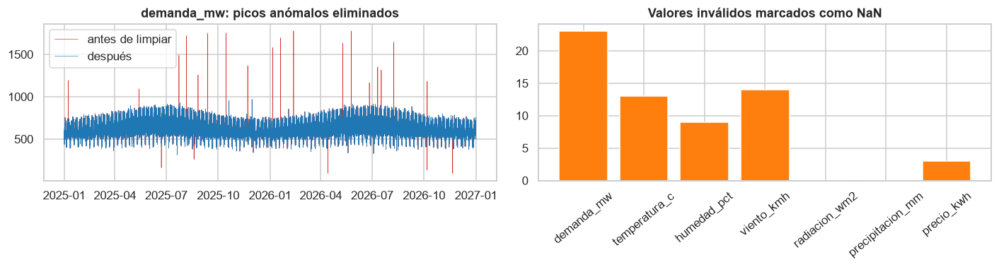
3. Análisis exploratorio
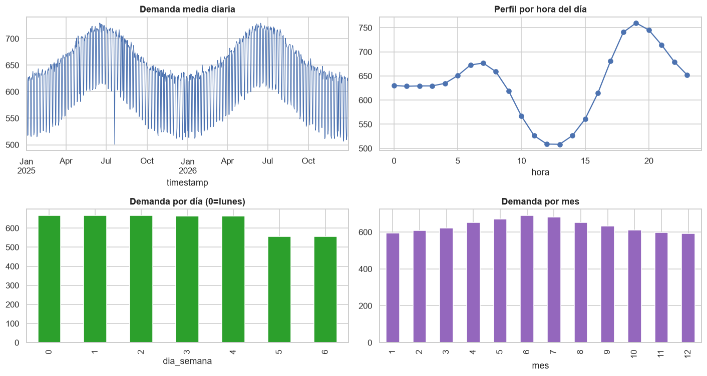
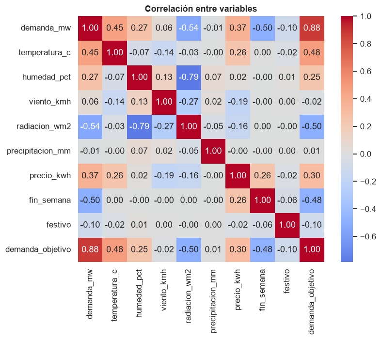
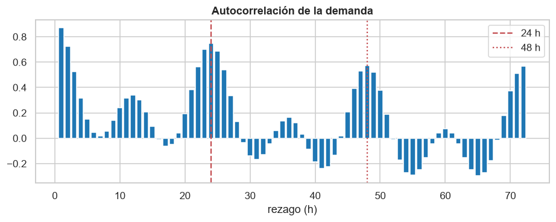
4. Split cronológico, normalización y ventanas
- Split 70 / 15 / 15 por orden temporal (sin
train_test_splitaleatorio): entrenamiento primero, luego validación (para Early Stopping y selección) y al final prueba, que nunca se toca hasta evaluar. - Normalización z-score con media y desviación calculadas solo en entrenamiento, aplicadas luego a validación y prueba.
- Ventanas: para cada hora t, la entrada son las horas [t-n+1 … t] y el objetivo es la demanda de t+1. Cada ventana se asigna al conjunto según la fecha de t, de modo que el objetivo de validación/prueba nunca se ve en entrenamiento. Las horas anteriores de la entrada son pasado, no hay fuga.
entrenamiento 2025-01-01 00:00:00 -> 2026-05-26 23:00:00 (12264 h)
validación 2026-05-27 00:00:00 -> 2026-09-13 11:00:00 (2628 h)
prueba 2026-09-13 12:00:00 -> 2026-12-31 23:00:00 (2628 h)
Media/desv. de entrenamiento:
media std
demanda_mw 632.38 97.08
temperatura_c 18.82 5.59
humedad_pct 72.21 14.79
viento_kmh 11.03 4.70
radiacion_wm2 201.89 257.08
precipitacion_mm 0.95 2.09
precio_kwh 24.62 5.41
| entrenamiento | validación | prueba | |
|---|---|---|---|
| ventana | |||
| 12 | 9686 | 2051 | 2093 |
| 24 | 7526 | 1605 | 1664 |
| 48 | 4504 | 964 | 1042 |
| común (n=48) | 4504 | 964 | 1042 |
Nota sobre la pérdida de ventanas. Cada valor inválido invalida las n ventanas que lo contienen, por eso la ventana de 48 h conserva menos muestras que la de 12 h. Es el precio de no inventar valores. Para que la comparación entre ventanas sea justa, en la Etapa 3 todos los modelos se evaluarán además sobre el conjunto común de instantes de prueba.
Entradas: ['demanda_mw', 'temperatura_c', 'humedad_pct', 'viento_kmh', 'radiacion_wm2', 'precipitacion_mm', 'precio_kwh', 'hora_sin', 'hora_cos', 'dia_sin', 'dia_cos', 'mes_sin', 'mes_cos', 'fin_semana', 'festivo'] Forma (muestras, pasos, variables): (7526, 24, 15) Variables continuas en train — media≈0 y std≈1: 0.004 1.001 OK: sin fuga temporal.
5. Diseño de las arquitecturas
Se comparan tres alternativas. Todas reciben una ventana (n horas × 15 variables) y producen un único valor: la demanda normalizada de la hora siguiente.
| Arquitectura | Diseño | Por qué | |
|---|---|---|---|
| A | LSTM base | LSTM(32) → Dense(1) |
Línea de referencia: la red recurrente más simple. Si un modelo más complejo no la supera, la complejidad no se justifica. |
| B | LSTM profunda | LSTM(64) → Dropout(0.2) → LSTM(32) → Dropout(0.2) → Dense(16) → Dense(1) |
Dos capas apiladas aprenden representaciones jerárquicas (la primera, patrones horarios; la segunda, tendencias más lentas). El Dropout controla el sobreajuste que trae la mayor capacidad. |
| C | CNN-LSTM (propuesta) | Conv1D(32, k=3, causal) → LSTM(48) → Dropout(0.2) → Dense(16) → Dense(1) |
La convolución detecta cambios locales (rampas de pocas horas, picos de radiación o temperatura) y reduce el ruido antes de la LSTM, que se centra en la dependencia temporal larga. Es causal: cada paso solo ve horas anteriores, sin información futura. Menos parámetros que B. |
Configuración común de entrenamiento (para que la comparación sea justa):
- Pérdida MSE, optimizador Adam (lr = 1e-3), lotes de 64, hasta 80 épocas.
- Early Stopping sobre la pérdida de validación (paciencia 10, restaura los mejores pesos).
- ReduceLROnPlateau: reduce el learning rate a la mitad si la validación se estanca 4 épocas.
- Semilla fija. Los lotes se mezclan dentro de entrenamiento (cada muestra ya es una ventana completa, así que barajar no rompe el orden temporal ni mezcla conjuntos).
6. Entrenamiento: 3 arquitecturas × 3 ventanas = 9 modelos
Cada modelo se entrena con las ventanas de su propio tamaño (datos[n]), usando validación únicamente para Early Stopping. El conjunto de prueba no se usa en ningún momento del entrenamiento.
| arq | ventana | epocas_ejecutadas | mejor_epoca | loss_train_mejor | loss_val_mejor | parametros | segundos | gap (val-train) | |
|---|---|---|---|---|---|---|---|---|---|
| 0 | A | 12 | 60 | 50 | 0.0583 | 0.0689 | 6177 | 49.7946 | 0.0106 |
| 1 | A | 24 | 45 | 35 | 0.0628 | 0.0725 | 6177 | 45.1892 | 0.0096 |
| 2 | A | 48 | 55 | 45 | 0.0613 | 0.0737 | 6177 | 58.5274 | 0.0124 |
| 3 | B | 12 | 54 | 44 | 0.0708 | 0.0695 | 33441 | 106.4525 | -0.0014 |
| 4 | B | 24 | 42 | 32 | 0.0810 | 0.0740 | 33441 | 98.9429 | -0.0070 |
| 5 | B | 48 | 55 | 45 | 0.0801 | 0.0765 | 33441 | 136.9567 | -0.0036 |
| 6 | C | 12 | 56 | 46 | 0.0672 | 0.0710 | 17825 | 64.7128 | 0.0038 |
| 7 | C | 24 | 66 | 56 | 0.0711 | 0.0743 | 17825 | 90.0674 | 0.0031 |
| 8 | C | 48 | 51 | 41 | 0.0730 | 0.0759 | 17825 | 71.7139 | 0.0029 |
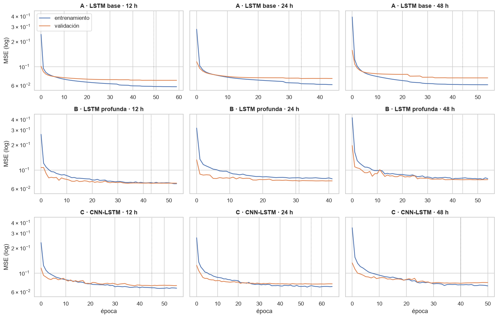
Lectura preliminar de las curvas (las métricas finales sobre prueba —MAE, MSE, RMSE, MAPE y R²— llegan en la Etapa 3):
- Todas convergen en 40-66 épocas y Early Stopping detiene el entrenamiento 10 épocas después del mejor punto de validación (línea punteada), restaurando esos pesos.
- A (sin Dropout) es la única donde la pérdida de entrenamiento sigue bajando mientras la de validación se aplana: aparece una brecha pequeña pero sistemática (≈0.010-0.012), un sobreajuste leve.
- B y C (con Dropout) muestran brecha casi nula o incluso negativa (validación ≤ entrenamiento). Esto no es un error: el Dropout está activo solo al calcular la pérdida de entrenamiento y se apaga al validar, así que la red "completa" rinde mejor que la red con neuronas apagadas.
- Ventana: en validación, 12 h obtiene la menor pérdida en las tres arquitecturas. Ojo: con 48 h hay menos muestras de entrenamiento (4 504 vs 9 686) por las ventanas descartadas, así que la comparación definitiva se hará sobre el conjunto de prueba común.
- Más parámetros no implicó mejor resultado: B (33 441 parámetros) no supera a A (6 177) en validación.
7. Evaluación sobre el conjunto de prueba
Todas las métricas están en MW (se des-normaliza con los parámetros de entrenamiento):
- MAE = media del valor absoluto de (real − predicho): error típico en MW, fácil de interpretar.
- MSE = media de (real − predicho)²: castiga más los errores grandes.
- RMSE = √MSE: mismo castigo que MSE pero en MW.
- MAPE = media del valor absoluto de (real − predicho) / real × 100: error relativo en %.
- R² = 1 − SSE/SST: fracción de la variabilidad de la demanda que explica el modelo (1 = perfecto).
Conjunto común de prueba. Para comparar ventanas de forma justa, la tabla principal evalúa los 9 modelos sobre los mismos instantes de prueba (los válidos para la ventana de 48 h). Se incluye como referencia un modelo ingenuo de persistencia (la demanda de la próxima hora será igual a la actual): un modelo útil debe superarlo con claridad.
Instantes de prueba comunes: 1042 (2026-09-26 a 2026-12-31)
| Modelo | Ventana | MAE | MSE | RMSE | MAPE | R² | Épocas | Mejor época |
|---|---|---|---|---|---|---|---|---|
| A · LSTM base | 12 | 19.86 | 624.6 | 24.99 | 3.43% | 0.9037 | 60 | 50 |
| A · LSTM base | 24 | 20.12 | 652.6 | 25.55 | 3.47% | 0.8994 | 45 | 35 |
| A · LSTM base | 48 | 21.06 | 718.4 | 26.80 | 3.63% | 0.8893 | 55 | 45 |
| B · LSTM profunda | 12 | 19.43 | 613.5 | 24.77 | 3.37% | 0.9054 | 54 | 44 |
| B · LSTM profunda | 24 | 20.05 | 659.7 | 25.69 | 3.47% | 0.8983 | 42 | 32 |
| B · LSTM profunda | 48 | 20.68 | 681.4 | 26.10 | 3.58% | 0.8950 | 55 | 45 |
| C · CNN-LSTM | 12 | 19.75 | 641.8 | 25.33 | 3.42% | 0.9011 | 56 | 46 |
| C · CNN-LSTM | 24 | 19.86 | 650.8 | 25.51 | 3.43% | 0.8997 | 66 | 56 |
| C · CNN-LSTM | 48 | 21.28 | 744.6 | 27.29 | 3.68% | 0.8852 | 51 | 41 |
| Persistencia (referencia) | 1 | 35.50 | 1963.3 | 44.31 | 6.07% | 0.6974 | 0 | 0 |
| Modelo | Ventana | n prueba | MAE | MSE | RMSE | MAPE | R² | Épocas | |
|---|---|---|---|---|---|---|---|---|---|
| 0 | A · LSTM base | 12 | 2093 | 19.91 | 625.4 | 25.01 | 3.40 | 0.9076 | 60 |
| 1 | A · LSTM base | 24 | 1664 | 20.30 | 661.1 | 25.71 | 3.47 | 0.9023 | 45 |
| 2 | A · LSTM base | 48 | 1042 | 21.06 | 718.4 | 26.80 | 3.63 | 0.8893 | 55 |
| 3 | B · LSTM profunda | 12 | 2093 | 19.47 | 612.1 | 24.74 | 3.34 | 0.9096 | 54 |
| 4 | B · LSTM profunda | 24 | 1664 | 20.25 | 664.7 | 25.78 | 3.47 | 0.9017 | 42 |
| 5 | B · LSTM profunda | 48 | 1042 | 20.68 | 681.4 | 26.10 | 3.58 | 0.8950 | 55 |
| 6 | C · CNN-LSTM | 12 | 2093 | 19.68 | 626.3 | 25.03 | 3.37 | 0.9075 | 56 |
| 7 | C · CNN-LSTM | 24 | 1664 | 20.23 | 667.3 | 25.83 | 3.47 | 0.9014 | 66 |
| 8 | C · CNN-LSTM | 48 | 1042 | 21.28 | 744.6 | 27.29 | 3.68 | 0.8852 | 51 |
Lectura de la tabla
- Las 9 LSTM superan ampliamente a la persistencia: RMSE de ~25-27 MW frente a 44 MW (≈ −43 %) y R² de 0.89-0.91 frente a 0.70. El modelo aprende algo más que "repetir la última hora": usa el perfil diario, el calendario y el clima.
- Error típico ≈ 20 MW (MAPE ≈ 3.4 %) sobre una demanda media de ~600 MW.
- Ventana: 12 h es la mejor en las tres arquitecturas y 48 h la peor. El patrón diario ya se ve en las codificaciones cíclicas de hora/día, y las últimas horas contienen casi toda la información útil; alargar la ventana añade entradas poco informativas y, por las ventanas descartadas, reduce las muestras de entrenamiento (9 686 → 4 504).
- Arquitecturas: las diferencias entre A, B y C son pequeñas (≤ 0.6 MW de RMSE en la misma ventana), menores que la variación que produce cambiar la ventana. La complejidad extra de B y C apenas se traduce en mejora.
Selección del modelo
El modelo final se elige con validación, no con prueba: elegir mirando prueba convertiría a la prueba en otro conjunto de ajuste y la estimación del error dejaría de ser honesta.
RMSE de validación (MW, instantes comunes): A_w12 25.26 A_w24 25.33 B_w12 25.50 C_w12 25.71 C_w24 25.91 B_w24 26.24 A_w48 26.31 C_w48 26.70 B_w48 26.81 Modelo seleccionado por validación: A · LSTM base con ventana de 12 h
| Modelo | Ventana | MAE | MSE | RMSE | MAPE | R² | Épocas | Mejor época | |
|---|---|---|---|---|---|---|---|---|---|
| 0 | A · LSTM base | 12 | 19.8565 | 624.5809 | 24.9916 | 3.4289 | 0.9037 | 60 | 50 |
8. Gráficas
8.1 Comparación de modelos
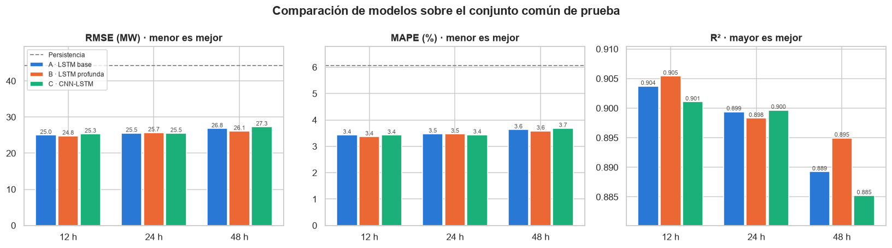
8.2 Demanda real vs. predicha
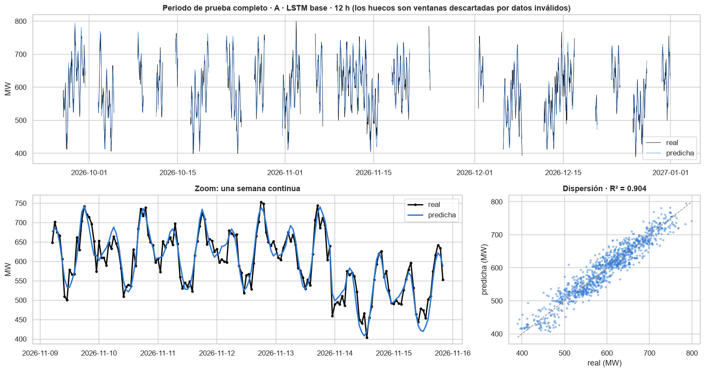
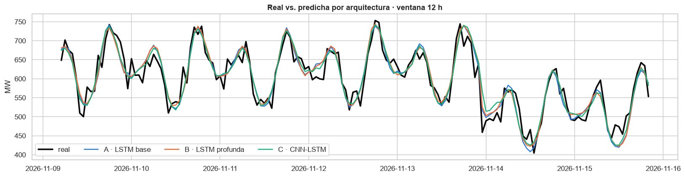
8.3 Error de predicción
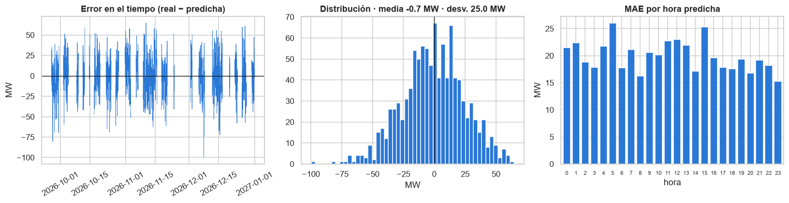
Sesgo medio: -0.70 MW | |error| < 25 MW en el 68.9% de las horas | percentil 95 de |error|: 49.0 MW
9. Sobreajuste y generalización
Se compara el error de cada modelo en entrenamiento, validación y prueba (cada uno sobre sus propias ventanas válidas). Si el error de entrenamiento es mucho menor que el de validación/prueba, el modelo memorizó en lugar de generalizar.
| Modelo | Ventana | RMSE train | RMSE val | RMSE test | test/train |
|---|---|---|---|---|---|
| A · LSTM base | 12 | 23.32 | 25.43 | 25.01 | 1.07 |
| A · LSTM base | 24 | 24.08 | 26.08 | 25.71 | 1.07 |
| A · LSTM base | 48 | 23.96 | 26.31 | 26.80 | 1.12 |
| B · LSTM profunda | 12 | 23.95 | 25.53 | 24.74 | 1.03 |
| B · LSTM profunda | 24 | 24.92 | 26.36 | 25.78 | 1.03 |
| B · LSTM profunda | 48 | 24.46 | 26.81 | 26.10 | 1.07 |
| C · CNN-LSTM | 12 | 23.95 | 25.81 | 25.03 | 1.04 |
| C · CNN-LSTM | 24 | 24.12 | 26.41 | 25.83 | 1.07 |
| C · CNN-LSTM | 48 | 24.45 | 26.70 | 27.29 | 1.12 |
Lectura. El cociente RMSE prueba / entrenamiento está entre 1.03 y 1.12: el error fuera de la muestra es apenas 3-12 % mayor que dentro, así que no hay sobreajuste relevante y los modelos generalizan a un periodo (sept-dic 2026) que nunca vieron. Los modelos con Dropout (B, C) tienen las brechas más bajas (1.03-1.07 en 12-24 h), y las ventanas de 48 h las más altas (1.07-1.12), coherente con que tienen menos muestras para la misma cantidad de parámetros. Validación y prueba quedan muy cerca, señal de que la validación fue un buen estimador para elegir el modelo.
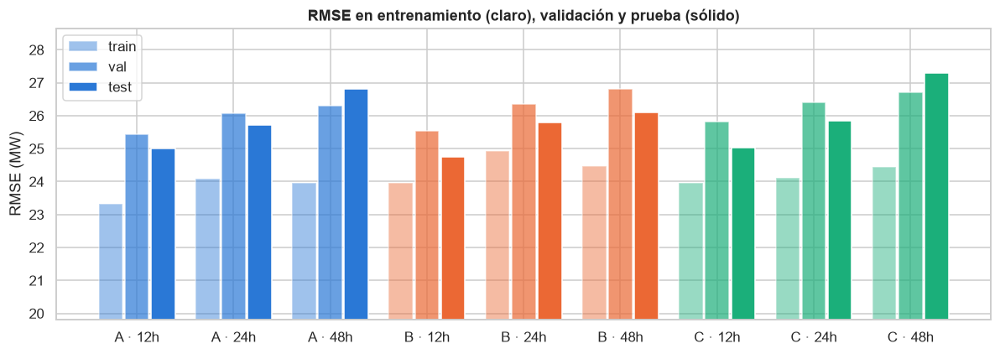
10. Experimentos de control: Dropout, Early Stopping y número de neuronas
Para responder con evidencia (y no solo con teoría) las preguntas 4, 5 y 6, se entrenan variantes controladas con la ventana de 12 h, cambiando un solo factor a la vez:
| Experimento | Variante | Se compara con |
|---|---|---|
| Dropout | B sin Dropout (dropout=0) |
B con Dropout 0.2 |
| Early Stopping | A entrenada 150 épocas fijas, sin Early Stopping | A con Early Stopping |
| Neuronas | A con 8 y con 128 unidades | A con 32 unidades |
| parametros | epocas | RMSE train | RMSE test | R² test | brecha test−train | |
|---|---|---|---|---|---|---|
| A con 32 neuronas + Early Stopping (referencia) | 6177.0 | 60.0 | 23.32 | 25.01 | 0.9076 | 1.69 |
| B con Dropout 0.2 (referencia) | 33441.0 | 54.0 | 23.95 | 24.74 | 0.9096 | 0.79 |
| B sin Dropout | 33441.0 | 41.0 | 23.23 | 25.26 | 0.9058 | 2.03 |
| A sin Early Stopping | 6177.0 | 150.0 | 21.08 | 28.87 | 0.8769 | 7.79 |
| A con 8 neuronas | 777.0 | 80.0 | 24.80 | 25.22 | 0.9061 | 0.42 |
| A con 128 neuronas | 73857.0 | 41.0 | 22.88 | 24.92 | 0.9083 | 2.04 |
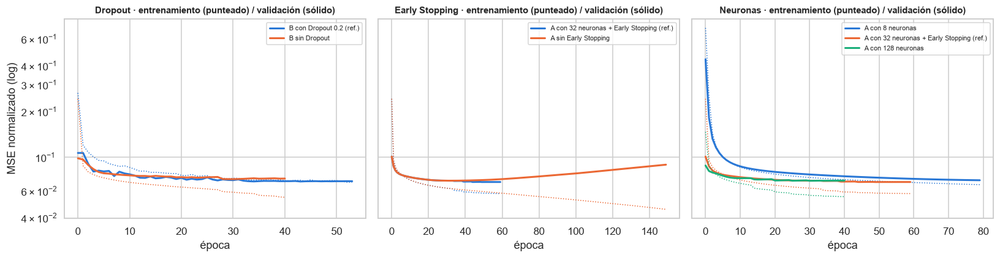
Lectura de los experimentos de control
- Sin Early Stopping (150 épocas): el error de entrenamiento sigue bajando (23.3 → 21.1 MW) pero la validación sube desde la época ~35 y el RMSE de prueba empeora de 25.0 a 28.9 MW (+15 %). Es sobreajuste de libro: la red empieza a memorizar ruido. Early Stopping lo evita deteniéndose en el mínimo de validación.
- Sin Dropout (B): entrena más rápido y baja más el error de entrenamiento, pero la brecha prueba-entrenamiento pasa de 0.8 a 2.0 MW y el RMSE de prueba empeora (24.7 → 25.3 MW). El Dropout actúa como regularizador.
- Neuronas: con 8 neuronas (777 parámetros) el RMSE de prueba es 25.2 MW; con 32, 25.0; con 128 (73 857 parámetros, 95× más), 24.9. Multiplicar los parámetros casi no mejora y aumenta la brecha de generalización (0.4 → 2.0 MW). Más neuronas no implica mejores resultados: el límite lo pone la información disponible en los datos, no la capacidad del modelo.
11. Evidencia adicional para el análisis
11.1 ¿Aporta algo la LSTM frente a un modelo lineal?
Se entrena una regresión lineal (Ridge) sobre exactamente las mismas ventanas de 12 h, aplanadas (12 × 15 = 180 entradas). Si la LSTM no la superara, su complejidad no estaría justificada.
| MAE | MSE | RMSE | MAPE | R² | |
|---|---|---|---|---|---|
| Persistencia | 35.50 | 1963.3 | 44.31 | 6.07 | 0.6974 |
| Regresión lineal (Ridge, 12 h) | 22.53 | 874.2 | 29.57 | 3.90 | 0.8652 |
| LSTM A (12 h) | 19.86 | 624.6 | 24.99 | 3.43 | 0.9037 |
11.2 Importancia de las variables (permutación)
Para cada variable se desordenan sus valores entre las muestras de prueba (en todos los pasos de la ventana) y se mide cuánto empeora el RMSE del modelo seleccionado. Si el modelo depende de esa variable, el error sube mucho; si no la usa, casi no cambia. Las codificaciones seno/coseno de una misma variable se permutan juntas. Se promedian 3 repeticiones.
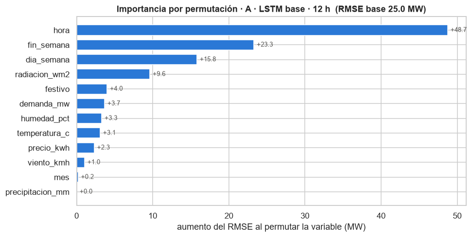
11.3 ¿Dónde se equivoca más el modelo?
Horas con |error| > 50 MW: 4.9% Festivos en entrenamiento: 192 horas (8 días)
| MAE (MW) | horas | |
|---|---|---|
| festivo | 34.84 | 38 |
| no festivo | 19.64 | 2055 |
| fin de semana | 20.01 | 621 |
| día laboral | 19.87 | 1472 |
12. Preguntas de análisis
1. ¿Por qué LSTM es apropiada para este problema?
La demanda eléctrica es una serie temporal: el valor de la próxima hora depende de lo que pasó en las horas anteriores (inercia del consumo, rampas de la mañana y la tarde, el ciclo diario). Una red densa trata cada entrada como independiente y no tiene noción de orden; una RNN simple sí la tiene, pero sufre de desvanecimiento del gradiente y "olvida" lo ocurrido hace muchas horas.
La LSTM resuelve esto con una celda de memoria y tres compuertas (olvido, entrada y salida) que aprenden qué información conservar, qué añadir y qué exponer en cada paso. Además:
- acepta entradas multivariadas (demanda, clima, precio y calendario a la vez) y aprende relaciones no lineales entre ellas (p. ej. la temperatura sube la demanda distinto de día que de noche);
- lee la ventana en orden, así que puede usar la forma de la curva reciente (si viene subiendo o bajando), no solo su nivel.
Evidencia (sección 11.1): sobre los mismos datos, la LSTM A obtiene RMSE ≈ 25 MW frente a ≈ 44 MW de la persistencia y supera también a una regresión lineal que ve exactamente la misma ventana (RMSE 29.6 MW, R² 0.87 vs 25.0 MW y R² 0.90 de la LSTM: 15 % menos error). La diferencia con el modelo lineal es lo que aportan la no linealidad y la memoria.
2. ¿Qué efecto tiene cambiar la ventana temporal?
En las tres arquitecturas, la ventana de 12 h fue la mejor y la de 48 h la peor (RMSE en prueba común: A 25.0 → 25.5 → 26.8 MW; B 24.8 → 25.7 → 26.1; C 25.3 → 25.5 → 27.3). Hay un compromiso:
- Ventana más larga = más contexto, pero también más entradas que procesar, un gradiente que debe propagarse por más pasos y menos muestras de entrenamiento (cada dato inválido descarta n ventanas: 9 686 muestras con 12 h vs 4 504 con 48 h). Más parámetros efectivos por muestra → peor generalización (cociente prueba/entrenamiento 1.07 con 12 h vs 1.12 con 48 h en A y C).
- Ventana más corta = menos contexto, pero aquí no hace falta más: el ciclo diario ya llega al modelo mediante la codificación cíclica de
horaydia_semana, y la información sobre el nivel actual de la demanda está en las últimas horas. Por eso 12 h basta.
Una ventana demasiado corta (p. ej. 1-3 h) perdería la tendencia reciente; la elección óptima depende del problema y se debe validar, como se hizo aquí.
3. ¿Existe sobreajuste?
No hay sobreajuste relevante en los modelos finales:
- El RMSE de prueba es solo 3-12 % mayor que el de entrenamiento (cociente 1.03-1.12, sección 9), y validación y prueba quedan muy cerca entre sí.
- Las curvas de pérdida (sección 6) no muestran la "U" típica: la validación se estabiliza y Early Stopping corta antes de que empiece a subir.
- La A sin regularización muestra una brecha pequeña (pérdida de entrenamiento que sigue bajando mientras la de validación se aplana): un sobreajuste leve y controlado.
El experimento de control confirma que el riesgo existía: la misma A entrenada 150 épocas sin Early Stopping sí sobreajusta (RMSE de entrenamiento 21.1 MW, pero de prueba 28.9 MW, un 15 % peor que con Early Stopping). Es decir, el sobreajuste se evitó gracias a las decisiones de entrenamiento, no porque fuera imposible.
4. ¿Qué es y qué efecto tiene Dropout?
Dropout es una técnica de regularización que, durante el entrenamiento, apaga aleatoriamente una fracción p de las neuronas en cada paso (aquí p = 0.2, el 20 %) y escala las restantes para compensar. Al predecir se desactiva y se usa la red completa. Efectos:
- Obliga a que ninguna neurona dependa de otras específicas (evita la co-adaptación) y a aprender representaciones redundantes y robustas.
- Equivale a entrenar un conjunto de muchas subredes que comparten pesos y promediarlas al predecir.
- Reduce el sobreajuste a cambio de un entrenamiento algo más lento y ruidoso.
Evidencia (sección 10): quitar el Dropout a B redujo el error de entrenamiento pero amplió la brecha prueba-entrenamiento de 0.8 a 2.0 MW y empeoró el RMSE de prueba (24.7 → 25.3 MW). También explica por qué en B y C la pérdida de validación queda por debajo de la de entrenamiento: la de entrenamiento se mide con neuronas apagadas.
5. ¿Qué es y qué efecto tiene Early Stopping?
Early Stopping vigila una métrica en validación (aquí val_loss) y detiene el entrenamiento cuando deja de mejorar durante un número de épocas (paciencia = 10). Con restore_best_weights=True devuelve los pesos de la mejor época, no los de la última. Efectos:
- Evita el sobreajuste: corta justo cuando la red empieza a memorizar el ruido de entrenamiento.
- Elige automáticamente el número de épocas (columna Épocas de la tabla: entre 42 y 66, con la mejor 10 épocas antes) y ahorra tiempo de cómputo.
Evidencia (sección 10): sin Early Stopping, a partir de la época ~35 la pérdida de validación sube mientras la de entrenamiento sigue bajando, y el RMSE de prueba empeora de 25.0 a 28.9 MW.
6. ¿Más neuronas implican necesariamente mejores resultados?
No. Lo muestran dos comparaciones:
- Experimento de neuronas (A, 12 h): 8 neuronas (777 parámetros) → RMSE 25.2 MW; 32 neuronas (6 177) → 25.0 MW; 128 neuronas (73 857, 95× más) → 24.9 MW. La mejora es de apenas 0.3 MW y la brecha de generalización crece de 0.4 a 2.0 MW.
- Entre arquitecturas: B tiene 5× más parámetros que A y queda prácticamente empatada (24.8 vs 25.0 MW con 12 h, y peor que A en validación).
Más capacidad solo ayuda mientras el modelo esté subajustado. Una vez que capta los patrones reales, el error restante es ruido que ninguna red puede predecir, y la capacidad extra se usa para memorizar ese ruido (sobreajuste), además de costar más cómputo y datos. El tamaño adecuado se encuentra validando, no maximizando.
7. ¿Qué modelo recomendaría para producción y por qué?
Se recomienda A · LSTM base con ventana de 12 h:
- Fue el mejor en validación, el criterio correcto de selección (el conjunto de prueba se reservó para estimar el error final: MAE 19.9 MW, RMSE 25.0 MW, MAPE 3.4 %, R² 0.90).
- Es el más simple y ligero (6 177 parámetros): inferencia instantánea, fácil de reentrenar, mantener y explicar.
- B quedó 0.2 MW mejor en prueba, una diferencia dentro del ruido que no justifica 5× más parámetros ni el doble de tiempo de entrenamiento. Ante un empate, el principio de parsimonia favorece al modelo simple.
- La ventana de 12 h fue la mejor en todas las arquitecturas y, en operación, requiere solo 12 horas de historia válida: es menos probable que un dato faltante impida generar la predicción que con 24 o 48 h.
En producción debería acompañarse de monitoreo del error, validación de las entradas con las mismas reglas de limpieza y reentrenamiento periódico.
8. ¿Qué variables pueden influir más en la demanda?
Según la importancia por permutación (sección 11.2), lo que más usa el modelo es el calendario: la hora del día (de lejos la más importante), el fin de semana y el día de la semana. Después vienen la radiación solar, los festivos, la demanda reciente y las variables climáticas (humedad, temperatura) y el precio. Viento, mes y precipitación casi no aportan.
Esto coincide con el análisis exploratorio: la demanda tiene un perfil diario muy marcado, baja en fin de semana (correlación −0.49) y se relaciona con la temperatura (+0.48) y la radiación (−0.50).
Dos matices:
- La importancia por permutación no es causalidad, y las variables correlacionadas se reparten la importancia. Por ejemplo, la radiación está muy ligada a la hora del día.
- La demanda reciente aparece más abajo de lo que su correlación sugiere (0.88) porque buena parte de esa información ya está contenida en el calendario y el clima: si se desordena la demanda, el modelo aún puede reconstruir el perfil esperado a partir de la hora y el día.
mes apenas importa porque el conjunto de prueba solo cubre septiembre-diciembre y la estacionalidad ya está representada por la temperatura y la radiación.
9. ¿Qué limitaciones tiene el modelo?
- Festivos: el error medio en horas festivas es ≈ 35 MW, casi el doble que en días normales (≈ 20 MW). Hay muy pocos ejemplos: solo 8 días festivos (192 horas) en el periodo de entrenamiento, así que el modelo no aprende bien su comportamiento particular.
- Datos faltantes en operación: como no se imputa, si alguna de las últimas 12 horas tiene un valor inválido no se puede generar la predicción. Un sistema real necesitaría un plan de contingencia (otro modelo, o alertar al operador).
- Solo una hora adelante: predice t+1. Para planear el día siguiente habría que predecir de forma recursiva (los errores se acumulan) o entrenar un modelo multi-horizonte.
- Sin pronósticos exógenos: usa clima observado hasta t, no pronósticos meteorológicos de t+1. Un cambio brusco del clima en la próxima hora no se anticipa.
- Historia corta y estacionalidad anual poco vista: dos años de datos implican pocos ciclos de cada mes, y la prueba (sept-dic 2026) no evalúa todas las estaciones.
- Picos extremos: ≈ 5 % de las horas tienen error > 50 MW, en general en cambios bruscos que el modelo suaviza (se ve en el zoom de la sección 8.2: la curva predicha es más suave que la real).
- Predicción puntual sin incertidumbre: entrega un único valor sin intervalo de confianza, útil saberlo para decisiones de despacho.
- Deriva de los datos: si cambian los patrones de consumo (nuevas industrias, tarifas, autogeneración solar), el modelo debe reentrenarse; los parámetros de normalización también quedan fijos al periodo de entrenamiento.
13. Conclusiones
- Tras una limpieza estricta y justificada, sin inventar valores, y un esquema cronológico sin fuga de información, las LSTM predicen la demanda de la siguiente hora con MAPE ≈ 3.4 % y R² ≈ 0.90 en un periodo nunca visto, un 43 % menos de error que la persistencia.
- La ventana de 12 h fue la mejor para las tres arquitecturas; ventanas más largas aportan poco contexto adicional y reducen las muestras disponibles.
- Las diferencias entre arquitecturas son pequeñas: la complejidad adicional (B, C) no se tradujo en mejoras relevantes, así que se recomienda la LSTM base por simplicidad y robustez.
- Dropout y Early Stopping fueron determinantes para evitar el sobreajuste, como demostraron los experimentos de control.
- El modelo depende sobre todo del calendario (hora, fin de semana, día) y en segundo lugar del clima y la demanda reciente; su principal punto débil son los festivos.
14. Despliegue en una app web
El modelo seleccionado (A · LSTM base, ventana 12 h) se despliega en Vercel como una app web (carpeta app_vercel/):
- Frontend (
index.html,app.js): permite ingresar las variables independientes (x) de las últimas 12 horas, ya sea cargándolas desde el histórico, escribiéndolas a mano o subiendo un CSV, y muestra la predicción de la demanda de la hora siguiente (y) con su rango típico de error, la gráfica y, si existe, el valor real. - API (
api/predict.py): función serverless de Python que valida las entradas con las mismas reglas de limpieza del notebook (si hay un valor faltante o fuera de rango, lo informa y no predice: no se inventan valores), construye las 15 variables por hora, normaliza con los parámetros de entrenamiento y ejecuta la LSTM. - Por qué NumPy y no TensorFlow en el servidor: TensorFlow pesa más de 500 MB y supera el límite de las funciones serverless (250 MB). Como la arquitectura A tiene solo 6 177 parámetros, se exportan sus pesos a JSON y el paso hacia adelante de la LSTM (compuertas de entrada, olvido, candidata y salida) se implementa en NumPy. La celda siguiente verifica que ambas implementaciones dan el mismo resultado.
Verificación Keras vs. NumPy en 300 ventanas de prueba: diferencia máx. 0.0050 MW, media 0.0024 MW
Las diferencias son del orden de milésimas de MW, que corresponden al redondeo a 2 decimales que hace la API: la app reproduce exactamente el modelo entrenado.
Para probarla localmente: python app_vercel/servidor_local.py y abrir http://localhost:8000. Las instrucciones de despliegue están en el README.md del repositorio.